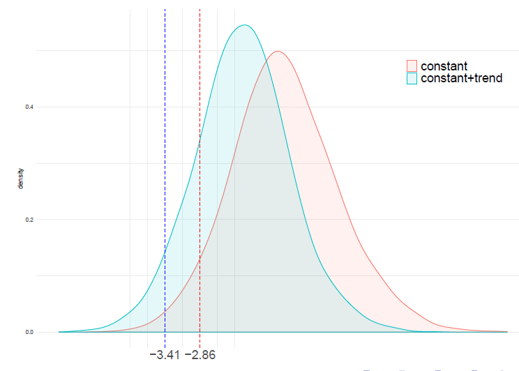
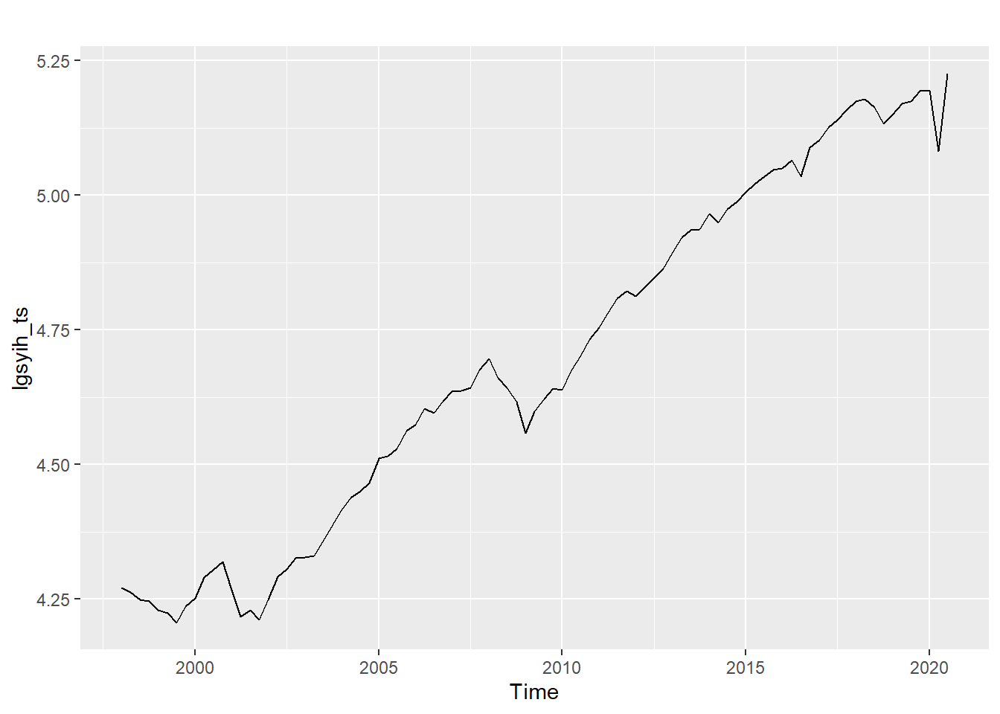
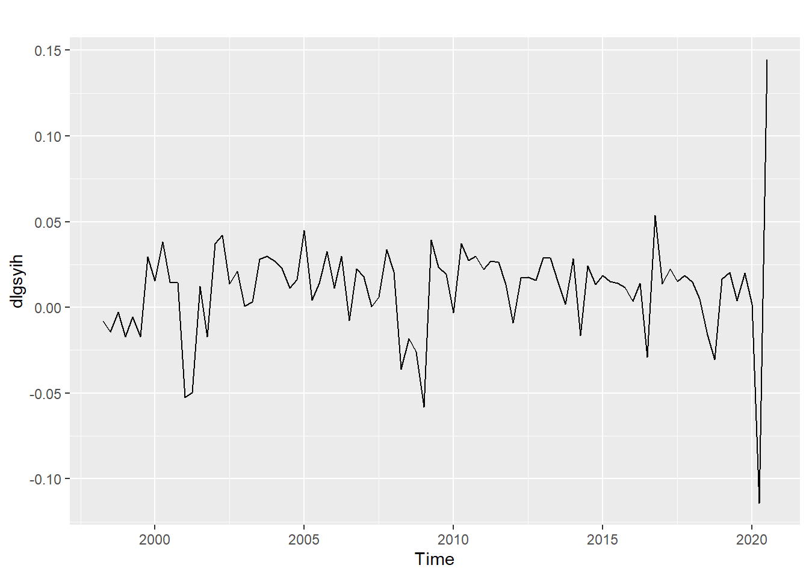

4.6 Birim kök ve durağanlık testleri
Bir değişkenin durağan olup olmadığını birim kök testleriyle anlayabiliriz.
Çok sayıda birim kök ve durağanlık testi geliştirilmiştir. Bunların en bilinenleri Dickey-Fuller (DF), Phillips-Perron, ve KPSS tesleridir.
DF testi AR(1) fomülasyonuna dayanır: \[y_t = \alpha + \beta y_{t-1} + \epsilon_t\] Rassal Yürüyüş (Random Walk) süreci bu modelin özel bir halidir.
Birim kök testleri \(\beta=1\) olup olmadığını test eder. Boş ve alternatif hipotezler aşağıdaki gibi yazılabilir: \[H_0: \mbox{Değişken durağan değildir}\Leftrightarrow \beta=1\] \[H_1: \mbox{Değişken durağandır}\Leftrightarrow \beta<1\]
DF ya ADF testi sol kuyruk testidir. Test istatistiği basit t-oranı olsa da dağılımı standart değildir.
Kritik değerler modelde sabit terim ve/veya trend olup olmamasına göre değişir.
Kritik değerden daha küçük bir ADF test değeri değişkenin durağan olduğuna işaret eder. Daha büyükse H0 kabul edilir, seri durağan değildir.

- Örnek:
library(urca) # birim kök testleri için R paketi
library(forecast)
# verileri yükle
load("veriler/gsyih_sa_endeks.RData")
# ts nesnesi oluştur:
gsyih_ts <- ts(gsyih_sa_endeks$gsyih_sa, start = c(1998,1), frequency = 4)
# log dönüştürme
lgsyih_ts <- log(gsyih_ts)
# zaman serisi grafiği, forecast::autoplot()
autoplot(lgsyih_ts) 
# ADF testi, sabit, trend yok
adf1 <- ur.df(lgsyih_ts ,
type = c("drift"), # drift (sabit) dahil
lags=4, # max gecikme sayısı
selectlags="AIC") # optimal gecikme AIC ile seçilsin
summary(adf1)##
## ###############################################
## # Augmented Dickey-Fuller Test Unit Root Test #
## ###############################################
##
## Test regression drift
##
##
## Call:
## lm(formula = z.diff ~ z.lag.1 + 1 + z.diff.lag)
##
## Residuals:
## Min 1Q Median 3Q Max
## -0.125625 -0.008085 0.005777 0.014417 0.115653
##
## Coefficients:
## Estimate Std. Error t value Pr(>|t|)
## (Intercept) 0.024954 0.047181 0.529 0.598
## z.lag.1 -0.002535 0.009997 -0.254 0.800
## z.diff.lag -0.148394 0.124711 -1.190 0.237
##
## Residual standard error: 0.02919 on 83 degrees of freedom
## Multiple R-squared: 0.01748, Adjusted R-squared: -0.006198
## F-statistic: 0.7382 on 2 and 83 DF, p-value: 0.4811
##
##
## Value of test-statistic is: -0.2536 7.4818
##
## Critical values for test statistics:
## 1pct 5pct 10pct
## tau2 -3.51 -2.89 -2.58
## phi1 6.70 4.71 3.86ADF test istatistiği \(-0.254\) olarak bulunmuştur. %5 düzeyinde kritik değer = \(-2.89\). Karar = boş hipotez reddedilemez, GSYİH serisinde birim kök vardır.
ADF birim kök kritik değer tablosu:
## 0.010 0.025 0.050 0.100 0.900 0.950 0.975 0.990
## 25 -3.724 -3.314 -2.986 -2.633 -0.370 0.000 0.327 0.714
## 50 -3.568 -3.213 -2.921 -2.599 -0.406 -0.040 0.281 0.658
## 100 -3.497 -3.166 -2.891 -2.582 -0.423 -0.059 0.259 0.632
## 250 -3.456 -3.139 -2.873 -2.573 -0.433 -0.071 0.247 0.617
## 500 -3.443 -3.131 -2.867 -2.570 -0.437 -0.075 0.242 0.612
## Inf -3.430 -3.122 -2.861 -2.567 -0.440 -0.078 0.238 0.607
## attr(,"control")
## table trend statistic
## "unitroot" "c" "t"- ADF testinin P değeri:
## [1] 0.9291699- Sabit + trend durumu:
# ADF testi, sabit, trend yok
adf2 <- ur.df(lgsyih_ts ,
type = c("trend"), # sabit + trend
lags=4, # max gecikme sayısı
selectlags="AIC") # optimal gecikme AIC ile seçilsin
summary(adf2)##
## ###############################################
## # Augmented Dickey-Fuller Test Unit Root Test #
## ###############################################
##
## Test regression trend
##
##
## Call:
## lm(formula = z.diff ~ z.lag.1 + 1 + tt + z.diff.lag)
##
## Residuals:
## Min 1Q Median 3Q Max
## -0.132998 -0.005927 0.005060 0.011903 0.099322
##
## Coefficients:
## Estimate Std. Error t value Pr(>|t|)
## (Intercept) 0.7999406 0.2829851 2.827 0.00591 **
## z.lag.1 -0.1919928 0.0689583 -2.784 0.00666 **
## tt 0.0024316 0.0008764 2.775 0.00684 **
## z.diff.lag -0.0181634 0.1288199 -0.141 0.88822
## ---
## Signif. codes: 0 '***' 0.001 '**' 0.01 '*' 0.05 '.' 0.1 ' ' 1
##
## Residual standard error: 0.02808 on 82 degrees of freedom
## Multiple R-squared: 0.1018, Adjusted R-squared: 0.06894
## F-statistic: 3.098 on 3 and 82 DF, p-value: 0.03126
##
##
## Value of test-statistic is: -2.7842 7.9564 3.8838
##
## Critical values for test statistics:
## 1pct 5pct 10pct
## tau3 -4.04 -3.45 -3.15
## phi2 6.50 4.88 4.16
## phi3 8.73 6.49 5.47ADF test istatistiği \(-2.78\) olarak bulunmuştur. %5 düzeyinde kritik değer = \(-3.45\). Karar = boş hipotez reddedilemez, GSYİH serisinde birim kök vardır. ADF testinin P değeri:
## [1] 0.2046817Karar: Boş hipotez %5 düzeyinde reddedilemez.
- GSYİH serisinin birinci farkını alarak testi tekrarlayalım.

# ADF testi, sabit
adf3 <- ur.df(dlgsyih ,
type = c("drift"), # sabit + trend
lags=4, # max gecikme sayısı
selectlags="AIC") # optimal gecikme AIC ile seçilsin
summary(adf3)##
## ###############################################
## # Augmented Dickey-Fuller Test Unit Root Test #
## ###############################################
##
## Test regression drift
##
##
## Call:
## lm(formula = z.diff ~ z.lag.1 + 1 + z.diff.lag)
##
## Residuals:
## Min 1Q Median 3Q Max
## -0.128102 -0.008149 0.005030 0.015111 0.112242
##
## Coefficients:
## Estimate Std. Error t value Pr(>|t|)
## (Intercept) 0.01251 0.00370 3.381 0.00111 **
## z.lag.1 -1.08284 0.17817 -6.078 3.68e-08 ***
## z.diff.lag -0.09020 0.15002 -0.601 0.54935
## ---
## Signif. codes: 0 '***' 0.001 '**' 0.01 '*' 0.05 '.' 0.1 ' ' 1
##
## Residual standard error: 0.02922 on 82 degrees of freedom
## Multiple R-squared: 0.5101, Adjusted R-squared: 0.4982
## F-statistic: 42.7 on 2 and 82 DF, p-value: 1.962e-13
##
##
## Value of test-statistic is: -6.0775 18.5108
##
## Critical values for test statistics:
## 1pct 5pct 10pct
## tau2 -3.51 -2.89 -2.58
## phi1 6.70 4.71 3.86ADF test istatistiği \(-6.078\) olarak bulunmuştur. %5 düzeyinde kritik değer = \(-2.89\). Karar = boş hipotez reddedilir, GSYİH serisinin birinci farkı durağandır. P değeri:
## [1] 7.779951e-08- KPSS testi: H0: seri durağandır
##
## #######################
## # KPSS Unit Root Test #
## #######################
##
## Test is of type: mu with 3 lags.
##
## Value of test-statistic is: 0.1122
##
## Critical value for a significance level of:
## 10pct 5pct 2.5pct 1pct
## critical values 0.347 0.463 0.574 0.739Karar: KPSS test istatistiği = 0.112’dir. Bu değer kritik değerlerden küçüktür (%10 düzeyinde bile). Öyleyse boş hipotez kabul edilir.
- Sonuç olarak GSYİH serisinin bir I(1) seri olduğu söylenebilir.